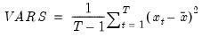

@vars Sample variance (d.f. adjusted). Sample (d.f. adjusted) Pearson product moment variance. Syntax: @vars(x, [s]) x: series, vector, matrix s: (optional) sample string or object when x is a series and assigned to a series Return: number The sample variance estimate is calculated as  where is the mean of . For series calculations, EViews will use the current or specified workfile sample. Examples If x = @rnd, then = @vars(x) will return a value close to 1/12 in large samples. Cross-references See also @var, @varp, and @stdevs.


 .
.